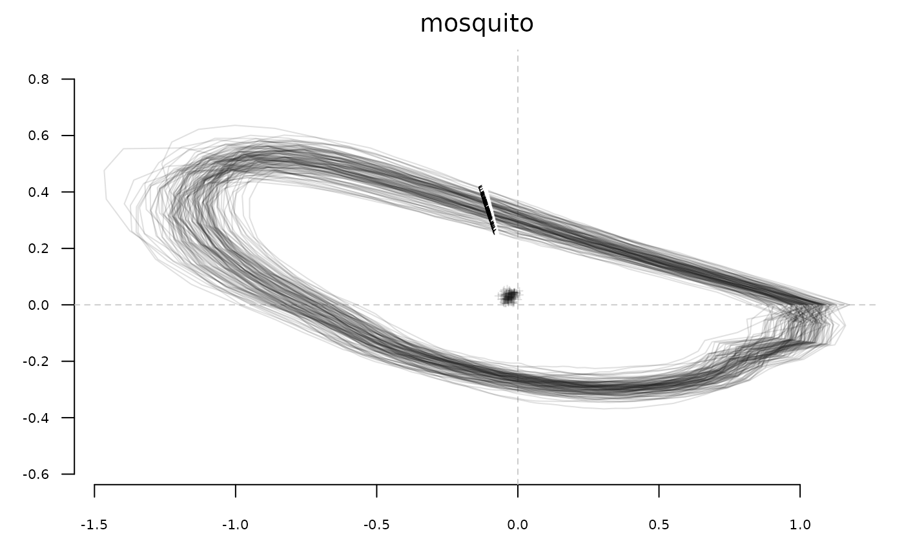
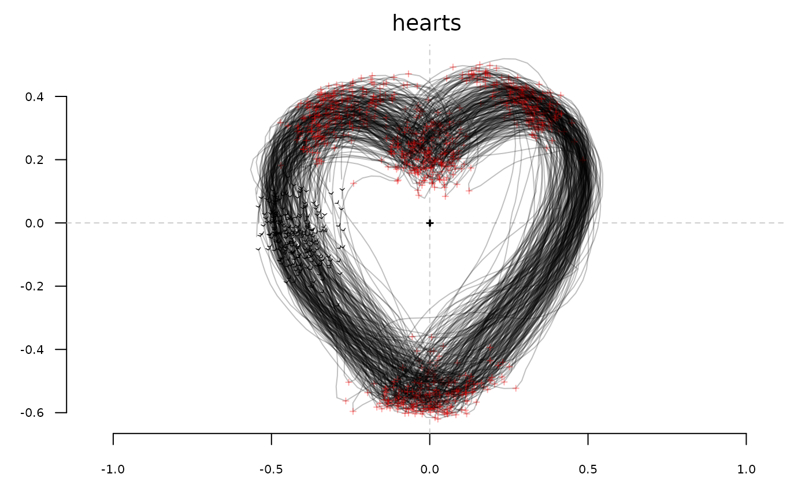
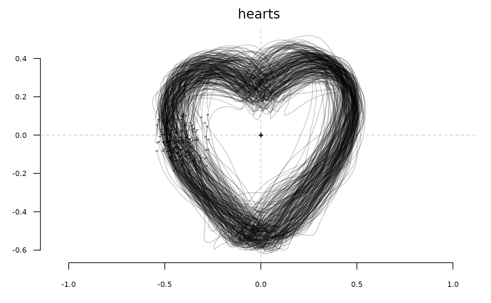

Usage
# S3 method for Coo
stack(
x,
cols,
borders,
fac,
palette = col_summer,
coo_sample = 120,
points = FALSE,
first.point = TRUE,
centroid = TRUE,
ldk = TRUE,
ldk_pch = 3,
ldk_col = "#FF000055",
ldk_cex = 0.5,
ldk_links = FALSE,
ldk_confell = FALSE,
ldk_contour = FALSE,
ldk_chull = FALSE,
ldk_labels = FALSE,
xy.axis = TRUE,
title = substitute(x),
...
)
# S3 method for Ldk
stack(
x,
cols,
borders,
first.point = TRUE,
centroid = TRUE,
ldk = TRUE,
ldk_pch = 20,
ldk_col = col_alpha("#000000", 0.5),
ldk_cex = 0.3,
meanshape = FALSE,
meanshape_col = "#FF0000",
ldk_links = FALSE,
ldk_confell = FALSE,
ldk_contour = FALSE,
ldk_chull = FALSE,
ldk_labels = FALSE,
slidings = TRUE,
slidings_pch = "",
xy.axis = TRUE,
title = substitute(x),
...
)Arguments
- x
The
Cooobject to plot.- cols
A
vectorof colors for drawing the outlines. Either a single value or of length exactly equals to the number of coordinates.- borders
A
vectorof colors for drawing the borders. Either a single value or of length exactly equals to the number of coordinates.- fac
a factor within the $fac slot for colors
- palette
a color palette to use when fac is provided
- coo_sample
if not NULL the number of point per shape to display (to plot quickly)
- points
logicalwhether to draw or not points- first.point
logicalwhether to draw or not the first point- centroid
logicalwhether to draw or not the centroid- ldk
logical. Whether to display landmarks (if any).- ldk_pch
pchfor these landmarks- ldk_col
color for these landmarks
- ldk_cex
cexfor these landmarks- ldk_links
logicalwhether to draw links (of the mean shape)- ldk_confell
logicalwhether to draw conf ellipses- ldk_contour
logicalwhether to draw contour lines- ldk_chull
logicalwhether to draw convex hull- ldk_labels
logicalwhether to draw landmark labels- xy.axis
whether to draw or not the x and y axes
- title
a title for the plot. The name of the
Cooby default- ...
further arguments to be passed to coo_plot
- meanshape
logicalwhether to add meanshape related stuff (below)- meanshape_col
a color for everything meanshape
- slidings
logicalwhether to draw slidings semi landmarks- slidings_pch
pchfor semi landmarks
Examples
# \donttest{
stack(bot)
bot.f <- efourier(bot, 12)
#> 'norm=TRUE' is used and this may be troublesome. See ?efourier #Details
stack(bot.f)
#> Warning: non-vector elements will be ignored
#> [1] ind
#> <0 rows> (or 0-length row.names)
stack(mosquito, borders='#1A1A1A22', first.point=FALSE)

stack(hearts)

stack(hearts, ldk=FALSE)

stack(hearts, borders='#1A1A1A22', ldk=TRUE, ldk_col=col_summer(4), ldk_pch=20)
stack(hearts, fac="aut", palette=col_sari)
chaffal <- fgProcrustes(chaff)
#> iteration: 1 gain: 75173
#> iteration: 2 gain: 0.037814
#> iteration: 3 gain: 0.0090566
#> iteration: 4 gain: 0.00034224
#> iteration: 5 gain: 0.0069657
#> iteration: 6 gain: 0.002451
#> iteration: 7 gain: 0.0006129
#> iteration: 8 gain: 4.8815e-05
#> iteration: 9 gain: 0.00046668
#> iteration: 10 gain: 0.00018849
#> iteration: 11 gain: 2.4521e-05
#> iteration: 12 gain: 2.9766e-06
#> iteration: 13 gain: 2.4553e-05
#> iteration: 14 gain: 6.3825e-06
#> iteration: 15 gain: 5.1105e-06
#> iteration: 16 gain: 8.2596e-07
#> iteration: 17 gain: 2.8678e-06
#> iteration: 18 gain: 2.0472e-06
#> iteration: 19 gain: 6.5232e-07
#> iteration: 20 gain: 1.1298e-07
#> iteration: 21 gain: 1.3908e-07
#> iteration: 22 gain: 2.8327e-07
#> iteration: 23 gain: 2.1788e-07
#> iteration: 24 gain: 4.5583e-08
#> iteration: 25 gain: 7.0497e-08
#> iteration: 26 gain: 8.9792e-08
#> iteration: 27 gain: 5.538e-08
#> iteration: 28 gain: 1.2621e-08
#> iteration: 29 gain: 1.503e-08
#> iteration: 30 gain: 2.2108e-08
#> iteration: 31 gain: 1.4865e-08
#> iteration: 32 gain: 3.7216e-09
#> iteration: 33 gain: 3.8289e-09
#> iteration: 34 gain: 5.7787e-09
#> iteration: 35 gain: 3.9287e-09
#> iteration: 36 gain: 1.0587e-09
#> iteration: 37 gain: 9.259e-10
#> iteration: 38 gain: 1.4847e-09
#> iteration: 39 gain: 1.039e-09
#> iteration: 40 gain: 2.9925e-10
#> iteration: 41 gain: 2.2588e-10
#> iteration: 42 gain: 3.8255e-10
#> iteration: 43 gain: 2.7403e-10
#> iteration: 44 gain: 8.3659e-11
stack(chaffal, slidings=FALSE)
 stack(chaffal, meanshape=TRUE, meanshape_col="blue")
# }
stack(chaffal, meanshape=TRUE, meanshape_col="blue")
# }